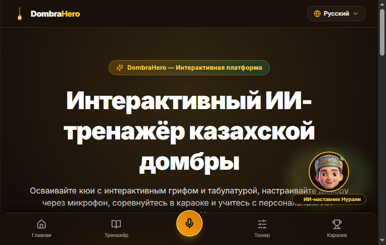

ШАГ 1 ИЗ 5: ГЛАВНЫЙ ЭКРАН
👧
Говорит Дальмира:
Слайд 1 • 00:00
«Здравствуйте, уважаемые члены жюри! Я представляю проект «Домбра будущего». Наше веб-приложение создано, чтобы помочь детям учить кюи легко и в игровой форме прямо дома!»